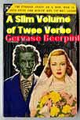

Friday, August the 6th, 2004
back to: title, date or indexes
It is quite a while since anything has been heard from the poet Gervase Beerpint, author of Homage To Neurasthenia and Do You Know The Way To Sin, José?*, so it is with something akin to breathless overexcitement that his publishers announce a forthcoming volume, his first since the cataclysmic events of Bastardgate engulfed John Major's Conservative administration of 1990 to 1997.

Provocatively entitled A Slim Volume Of Twee Verse, Beerpint's latest is a huge slab of a book. Truman Capote said of Kerouac's On The Road that “it's not writing, it's typing”, and one feels that were Mr C still with us, he would make the same waspish remark about the torrent of verbiage spewed across these pages. It is difficult to know what to make of a work that steadfastly refuses to engage the reader in any way. At times it reads like an ironmongery catalogue for upwards of a hundred pages, then without warning the poet launches into his own (incompetent) Tagalog translation of the Book of Isaiah. Some of the old standby Beerpint motifs are here—popinjays, choc ices, and dust—but as a whole the work is baffling, perhaps even rubbish.
We rang the poet to ask some pertinent questions, but all that could be heard from his end of the line was this.
* NOTE : Copyright on this title is, of course, held in perpetuity by Max Décharné.
The pinging of sonar